来源：https://a0t0x7e11g.feishu.cn/docx/Ky8ddig8VoQ2Kqx6bXOcMnrdnNd
大家好我是宝哥，之前今天我来分享打新债保姆级教程，本文阅读完大概5分钟时间
目录：
一：打新
二：持有至到期
三：低买高卖
四：打新债教程
1.（手把手教你开户）
2.（手把手带你打新）
话不多说，可以看一下之前打新收益
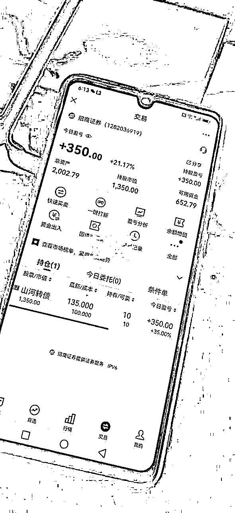
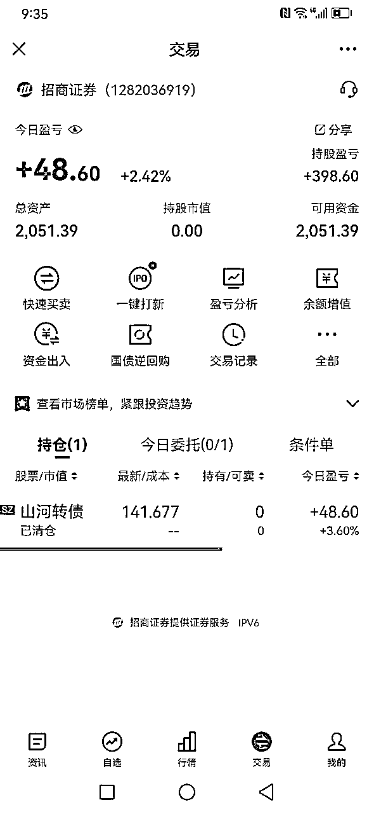
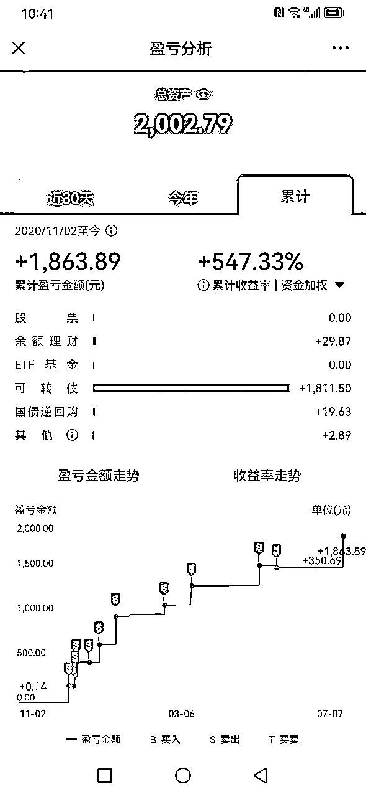
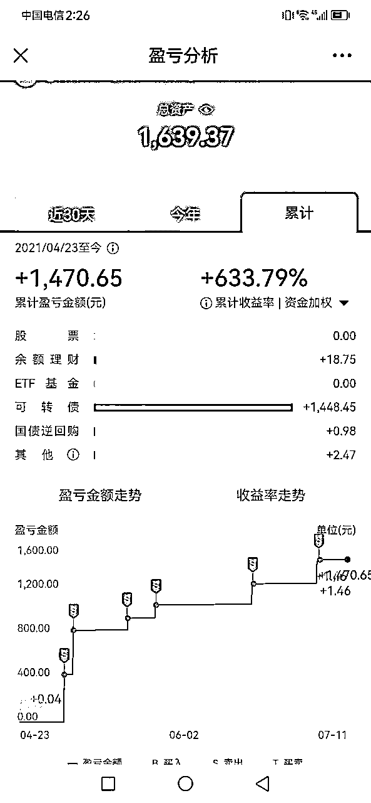
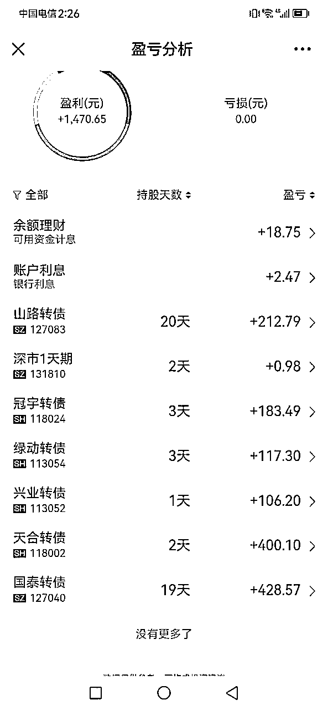
打新之所以能这么火，原因嘛，很简单！谁让它风险低、门槛低，操作正确，99%能赚钱，收益率也是相当可观。
当然，也有不少小伙伴纠结：
打新就是申购新上市的可转债。
走完这四个流程，公司就可以正式发行可转债，所以我们可以通过分析正处于不同阶段的公司，就预估大概有多少新债发行。
目前，已经拿到证监会批文的公司一共有25家，已经在证监会发审通过的公司共11家。此外还有155家公司的发债计划，已经通过了股东大会的审批。所以从这些数据来看，下半年的新债数量应该不少。
申购新债没有资金门槛，也没有持仓门槛，只要你开通了股票账户，就可以申购新债。
由于中签率是全随机的，小伙伴们可以根据自己的喜好调整申购时间。
中签后48小时，券商就会通过APP内提醒，短信通知等多种手段，通知你中签了。
（节假日时，会顺延到交易日通知）
中签之后，券商会自动从你的账户里扣钱，中一签就扣一千，中两签就扣两千。
在完成交款之后，就要耐心等待转债上市了，这个过程最长要90多天，最短只要十几天，不过平均时间一般都在15-30天左右。
上市当天，就可以卖出可转债获利了，根据转债受市场追捧程度的不同，上市转债的涨幅也不一定，一般来说一签转债的收益会在几十到三百多元不等。
打新是一种市场套利政策，上市当天卖出可以提升资金的周转效率，有的转债上市当天就是最高价，有的转债上市之后还会暴涨，但这往往难以预测。
如果你资金充裕，并且这笔钱2-3年没有别的用途的话，中签的新债也可以拿在手里，谋求最大收益，如果钱不多，那最好上市首日卖出，提高资金利用效率。
想要提高中签率，唯一的办法就是用亲属的身份证多开几个账户，一起申购，不过有言论传出要监管多账户打新，虽然没有具体的政策，但可能也是一个信号，多账户打新的小伙伴们，且打且珍惜吧。
转债本质还是一张债券，每年都会有它的利息，持有到期就可以收获本金与利息，这是转债持有者在应对极端状况时的防守手段。
但可转债身为债券的利息很低，大部分只有一年期定存的水平，如果转债持有到期，收益通常会比较少。
在一些极端条件下，股市长熊，可转债的价格也抬不起头来，这个时候，我们就可以持有转债到期，等到上市公司返本付息。
这是极端条件下的一种保本策略。
在这里，给大家介绍另一个小知识，可转债的纯债价值，即把可转债完全当成一张债券时的价值，一般来说，可转债的价格很难跌破纯债价值的附近。
而评估纯债价值，可以通过下面这个四个维度：
由于计算起来比较复杂，所以具体的公式宝哥就不放了，感兴趣的小伙伴，可以去东方财富网查看转债的纯债价值。
这个说起来最简单， 但操作起来最复杂，简单来说，就是在可转债便宜的时候买入，在价格上涨后卖出。
一般来说，可转债低买高卖主要可分为两个策略：
挑选现价低于100元，或者现价低于转债纯债价值的转债，凑成一个十到二十只转债的组合，如果能够筛选出来的转债太多，还可以通过评级等一些其他手段过滤。
这个策略的优点就是非常抗跌，因为转债是具有债券属性的，以极低的价格买入，即便是持有到期也能产生一定的收益。
如果在持有期间转债对应的正股股价暴涨，转债的价格也会飙升，比较典型的例子就是2019年年初的“模塑转债”，属于低价范畴，后来正股被爆炒，转债的价格也被一路拉到了200多元。
但以当前的市场来看，低价策略基本无法施行，因为转债市场整体的价格已经涨的很高了，根本就挑选不出来能够凑齐一个组合的转债。
根据转债的到期收益、转股价值、剩余年限、现价等多种因素综合评估，制定一个组合，定期剔除不符合规则的转债，纳入新的转债，轮动套利。
到期收益越高越好，转股价值越高越好，剩余年限越短越好，现价越低越好。
由于这个策略存在一定的风险，转债当前市场的价格也比较高，小投这里只做简单的介绍，真正对这个策略感兴趣的小伙伴，可以根据小投上面提到的几个条款，根据自己的风险承受能力，调整不同属性在转债组合当中的权重。
这个策略的优势在于，根据这个策略选出的转债， 更容易被正股的上涨而带动，从而实现上涨，但为了追求上涨，这个策略会舍弃掉一些安全边际。
①下载华泰证券的APP涨乐财富通，打开APP首页，点击屏幕下方的开户/交易按钮。
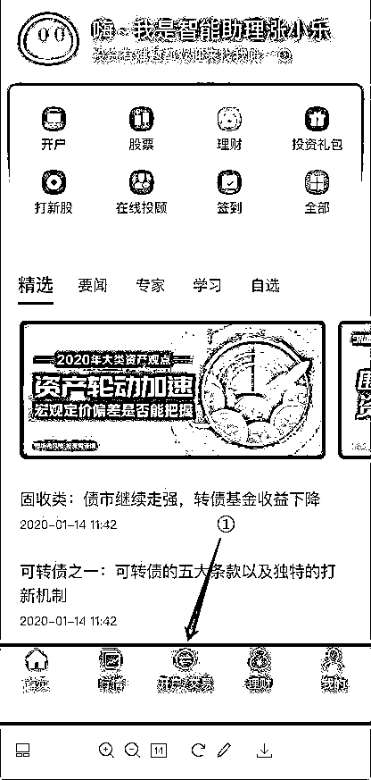
②点击屏幕下方的立即开户，进入开户界面。
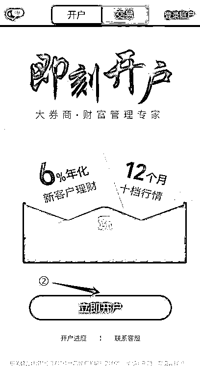
③点击画面正中的一键验证。
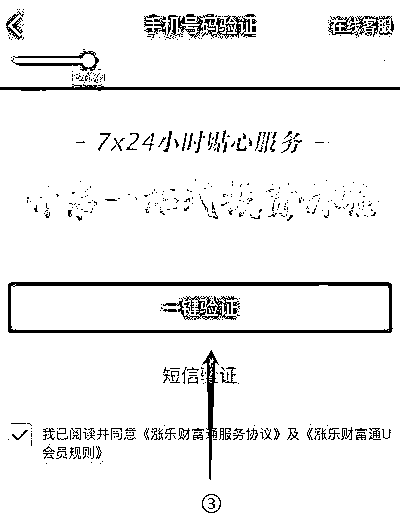
④根据提示，一步步操作，就可以完成开户了。
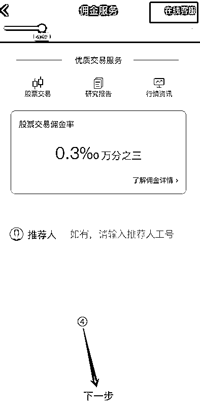
开户过程当中，遇到任何问题，都可以点击右上角的在线客服。 开完了户，下面就可以开始打新了。
①进入APP首页，点击屏幕下方的开户/交易按钮；
②点击屏幕上方的交易按钮；
③点击屏幕中央的打新神器。
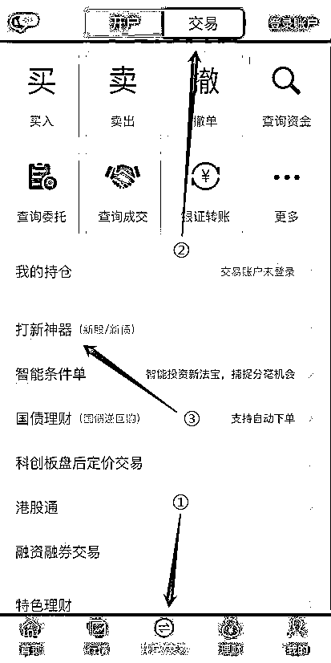
④点击屏幕上方的新债申购。
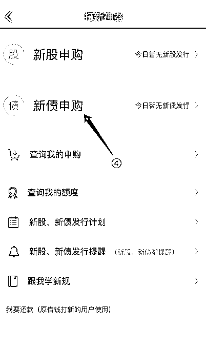
⑤然后就可以看到当天的新债了，点击新债名称，即可以开始申购，如果是空的，说明没有新债。